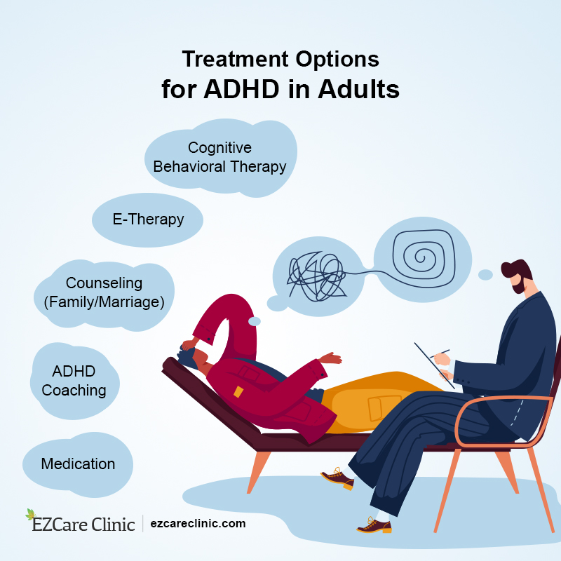

العلاج لفرط الحركة وتشتت الانتباه
يشمل العلاج لفرط الحركة وتشتت الانتباه عادة مزيجًا من الدواء والعلاج السلوكي. هدف العلاج هو مساعدة الأفراد الذين يعانون من فرط الحركة وتشتت الانتباه على إدارة أعراضهم وتحسين وظائفهم اليومية وتعزيز جودة حياتهم.
الأدوية
تُستخدم الأدوية مثل ريتالين وأدرال عادةً في علاج فرط الحركة وتشتت الانتباه. تعمل هذه الأدوية عن طريق زيادة مستويات بعض الناقلات العصبية في الدماغ، مثل الدوبامين والنورأدرينالين، والتي تساعد في تنظيم الانتباه والسيطرة على الاندفاع.
هناك نوعان رئيسيان من الأدوية المستخدمة لعلاج فرط الحركة وتشتت الانتباه:
- المنشطات: تعمل هذه الأدوية مثل ريتالين وأدرال عن طريق زيادة مستويات الدوبامين والنورأدرينالين في الدماغ.
- غير المنشطات: تعمل هذه الأدوية مثل ستراتيرا عن طريق زيادة مستويات النورأدرينالين في الدماغ.
العلاج السلوكي
العلاج السلوكي هو نوع من العلاج النفسي يساعد الأفراد الذين يعانون من فرط الحركة وتشتت الانتباه على تحديد وتغيير الأنماط السلبية للتفكير والسلوك. هناك عدة أنواع من العلاج السلوكي التي يمكن أن تكون فعالة في علاج فرط الحركة وتشتت الانتباه، بما في ذلك:
- العلاج السلوكي التصحيحي: هذا النوع من العلاج يساعد الأفراد على تطوير المهارات والاستراتيجيات لإدارة أعراض فرط الحركة وتشتت الانتباه.
- العلاج الأسري: يتضمن هذا النوع من العلاج العمل مع عائلة الفرد لتطوير استراتيجيات لإدارة أعراض فرط الحركة وتحسين العلاقات.
تغييرات في نمط الحياة
بالإضافة إلى الدواء والعلاج السلوكي، يمكن أيضًا أن تساعد بعض التغييرات في نمط الحياة على تخفيف أعراض فرط الحركة وتشتت الانتباه. تشمل هذه التغييرات:
- ممارسة الرياضة بانتظام: يمكن أن تساعد